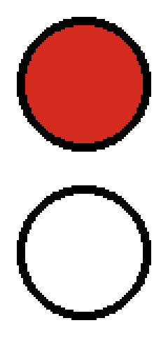

Friendly Instructive Simple Hunt Puzzles
Friendly Instructive Simple Hunt Puzzles
Friendly Instructive Simple Hunt Puzzles
Friendly Instructive Simple Hunt Puzzles
Message from Boss: I need these flags printed. Please make sure they print out
properly by using those circles like the ones they use on chip bags.
I have provided an example below.




Image attributions as formatted by Wikipedia
Canada Flag:
By Original: George F. G. StanleyModified by: The original uploader was Illegitimate Barrister at Wikimedia Commons. The current SVG encoding is a rewrite performed by MapGrid. - This vector image is generated programmatically from geometry defined in File:Flag of Canada (construction sheet - leaf geometry).svg., Public Domain, Link
Slovenia Flag:
By Original: Marko Pogačnik Vector: Achim1999 - Own work construction sheet from http://www.vlada.si/o_sloveniji/politicni_sistem/drzavni_simboli/, Public Domain, Link
Uzbekistan Flag:
By Farhod Yoʻldoshev - Oʻzbekiston Respublikasining Davlat bayrogʻi to‘g‘risida, Public Domain, Link
Luxembourg Flag:
By Drawn by User:SKopp - Own work http://www.legilux.public.lu/leg/a/archives/1972/0051/a051.pdf#page=2, colors from http://www.legilux.public.lu/leg/a/archives/1993/0731609/0731609.pdf, Public Domain, Link
Chile Flag:
By See file history below for details. - Own work. This vector image was generated programmatically from geometry defined in File:Flag of Chile (construction sheet).svg., Public Domain, Link
Maldives Flag:
By See File history, below, for details. - Constitution of the Republic of Maldives — Schedule 3 and Maldives, Public Domain, Link
Tuvalu Flag:
By Unknown - Tuvalu National Flag ActCONSTRUCTION SHEET: STAR TABLE: File:Flag of Tuvalu (construction sheet).svg#Star_table, Public Domain, Link
Morocco Flag:
By Denelson83, Zscout370 - Moroccan royal decree (17 November 1915), BO-135_ar page 6 (Arabic) - BO-162_fr page 6 (French)Arabic-language textFrench-language textEnglish Translation: Cherifian Dahir concerning the distinction of the Moroccan flag — Let it be known from this Our noble decree, may God exalt its value and make happiness and prosperity revolve around its center, that, in view of the advancement of the affairs of Our Cherifian Kingdom, the spread of its glory and renown, and the circumstances requiring that it be distinguished by a flag setting it apart from other kingdoms; and whereas the flag of Our revered ancestors resembled certain other flags, particularly those used for maritime signals; Our noble consideration has decreed that Our blessed flag be distinguished by placing the five-pointed Seal of Solomon at its center, in green, beseeching Almighty God to keep it ever flying with the winds of fortune and prosperity, in the present and in the future. Amen and peace.Moroccan royal decree (23 November 2005), BO-5378-ar page 5 (Arabic) - BO-5378-fr page 6 (French)English Translation: Cherifian Dahir with reference 1.05.99 issued on 20 Shawwal 1426 (23 November 2005) concerning the characteristics of the Kingdom’s flag and national anthem — In accordance with Article Seven of the Constitution, the flag of the Kingdom shall be a red banner bearing a green five-pointed star at its center. The flag shall be made of vivid red fabric, opaque and rectangular in shape. The star shall be open, palm green in color, composed of five continuous points, and woven into the same fabric so as to be visible on both sides of the flag. One of its points shall be directed upward. The hoist (vertical dimension) of the flag shall be equal to two thirds (2/3) of its fly (horizontal length). The star shall be inscribed within an invisible circle whose radius is equal to one sixth (1/6) of the flag’s fly (horizontal length), the center of which coincides with the intersection of the invisible diagonal lines of the flag’s rectangle. The width of each branch of the star shall be equal to one twentieth (1/20) of its length.See also:Flags of the World - Morocco, descriptionVexilla Mundi - MoroccoColors from Maroc.ma - Moroccan Flag, Public Domain, Link
Colombia Flag:
By See File history below for details. - Drawn by User:SKopp, Public Domain, Link
Solomon Islands Flag:
By User:SKopp - Drawn by User:SKopp, Public Domain, Link
Niger Flag:
By Made by: Philippe Verdy User:verdy_p, see also fr:Utilisateur:verdy_p. - The flag of Niger often has the unusual 7:6 proportions. The three bands have exactly the same size. For exact and complete coverage of the image, it is used as background. The central filled circle is at least 50% of the median band in diameter. 85% is used for better rendering at small sizes. For reference colors, see Flags of the world that define Pantone colors. For Pantone color conversion, please use ONLY the sRGB color profile (at reference gamma = 2.2 on CRT screen, without gamma correction by software or by the graphics display driver, as defined in IEC 61966-2.1, and with slope limit of 1/32, this limit affecting only the indices 1 to 14 in the 8-bit colorimetric component space 0 to 255):The "burnt orange" color in the top band and circle is Pantone(166), i.e. RGB(224,82,6) = #E05206 on sRGB CRT screen, or CMYK(0,65%,100%,0) for process coated print, BUT NOT light orange #FF7000 which is somewhere between Pantone(130C) and Pantone(151), and is even lighter than X11 orange! See https://web.archive.org/web/20060207090052/http://www.seoconsultants.com/css/colors/conversion/100/The central white band is plain D65 reference white = RGB(255,255,255) = #FFFFFF.The green color in the bottom band is Pantone(361), i.e. RGB(13,176,43) = #0DB02B on sRGB CRT screen, or CMYK(76%,0,91%,0) for process coated print, BUT NOT grass green #36A100 which too burnt and more like Pantone(369)! See https://web.archive.org/web/20060207090040/https://www.seoconsultants.com/css/colors/conversion/300/, Public Domain, Link
Kyrgyzstan Flag:
By Shakiev N.T., Primov U.B. - http://kenesh.kg/ru/draftlaw/644212/show; updated with approved specifications, Public Domain, Link
Note: The hover may not work when using some extensions. Please be aware that you may see the entire section when clicking it
4/10
The boss's letter is important to figure out the puzzle
Try doing a similar thing the boss did to all flags
Why did the boss give an "A" to the Canada flag?
This extract uses indexing, i.e. taking the nth letter from something
The colors on each flag respectively are 4,4,3,3,3,5,2,3,4,3,2
We take the Xth letter of the country's name, where X is the number of colors on the flag
The countries are sloVenia, uzbEkistan, luXembourg, chIle, maLdives, tuvaLu, mOrocco, coLombia, solOmon islands, niGer, kYrgyzstan
Collecting all the letters, it spells VEXILLOLOGY
VEXILLOLOGY
.svg){kind=link}
.svg){kind=link}
.svg){kind=link}
.svg#Star_table){kind=link}
_Arabic-language_text.jpg){kind=link}
_French-language_text.jpg){kind=link}